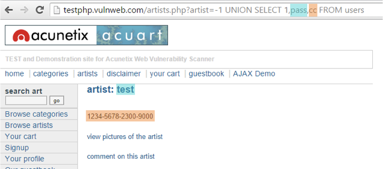
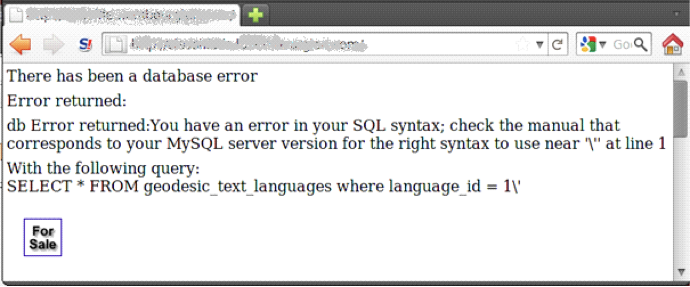
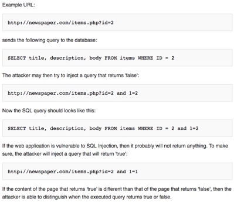

Types of SQL Injection
SQL Injection can be used in a range of ways to cause serious problems. By levering SQL Injection, an attacker could bypass authentication, access, modify and delete data within a database. In some cases, SQL Injection can even be used to execute commands on the operating system, potentially allowing an attacker to escalate to more damaging attacks inside of a network that sits behind a firewall.
SQL Injection can be classified into three major categories – In-band SQLi, Inferential SQLi and Out-of-band SQLi.
In-band SQLi (Classic SQLi)
In-band SQL Injection is the most common and easy-to-exploit of SQL Injection attacks. In-band SQL Injection occurs when an attacker is able to use the same communication channel to both launch the attack and gather results.
The two most common types of in-band SQL Injection are Error-based SQLi and Union-based SQLi.
Union-based SQLi
Union-based SQLi is an in-band SQL injection technique that leverages the UNION SQL operator to combine the results of two or more SELECT statements into a single result which is then returned as part of the HTTP response.
Error-based SQLi
Error-based SQLi is an in-band SQL Injection technique that relies on error messages thrown by the database server to obtain information about the structure of the database. In some cases, error-based SQL injection alone is enough for an attacker to enumerate an entire database. While errors are very useful during the development phase of a web application, they should be disabled on a live site, or logged to a file with restricted access instead.
Inferential SQLi (Blind SQLi)
Inferential SQL Injection, unlike in-band SQLi, may take longer for an attacker to exploit, however, it is just as dangerous as any other form of SQL Injection. In an inferential SQLi attack, no data is actually transferred via the web application and the attacker would not be able to see the result of an attack in-band (which is why such attacks are commonly referred to as “blind SQL Injection attacks”). Instead, an attacker is able to reconstruct the database structure by sending payloads, observing the web application’s response and the resulting behavior of the database server.
The two types of inferential SQL Injection are Blind-boolean-based SQLi and Blind-time-based SQLi.
Boolean-based SQLi
Boolean-based SQL Injection is an inferential SQL Injection technique that relies on sending an SQL query to the database which forces the application to return a different result depending on whether the query returns a TRUE or FALSE result.
Depending on the result, the content within the HTTP response will change, or remain the same. This allows an attacker to infer if the payload used returned true or false, even though no data from the database is returned. This attack is typically slow (especially on large databases) since an attacker would need to enumerate a database, character by character.
Time-based SQLi
Time-based SQL Injection is an inferential SQL Injection technique that relies on sending an SQL query to the database which forces the database to wait for a specified amount of time (in seconds) before responding. The response time will indicate to the attacker whether the result of the query is TRUE or FALSE.
Depending on the result, an HTTP response will be returned with a delay, or returned immediately. This allows an attacker to infer if the payload used returned true or false, even though no data from the database is returned. This attack is typically slow (especially on large databases) since an attacker would need to enumerate a database character by character.
For example:
- If the first letter of the first database's name is an 'A', wait for 10 seconds.
- If the first letter of the first database's name is an 'B', wait for 10 seconds. etc.
Out-of-band SQLi
Out-of-band SQL Injection is not very common, mostly because it depends on features being enabled on the database server being used by the web application. Out-of-band SQL Injection occurs when an attacker is unable to use the same channel to launch the attack and gather results.
Out-of-band techniques, offer an attacker an alternative to inferential time-based techniques, especially if the server responses are not very stable (making an inferential time-based attack unreliable).
Out-of-band SQLi techniques would rely on the database server’s ability to make DNS or HTTP requests to deliver data to an attacker. Such is the case with Microsoft SQL Server’s xp_dirtree command, which can be used to make DNS requests to a server an attacker controls; as well as Oracle Database’s UTL_HTTP package, which can be used to send HTTP requests from SQL and PL/SQL to a server an attacker controls.